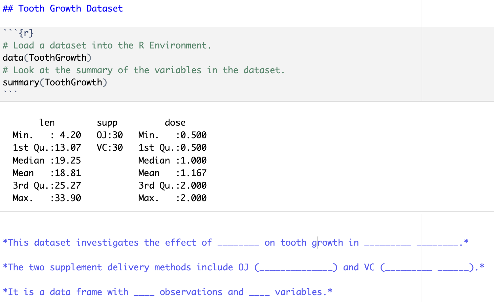
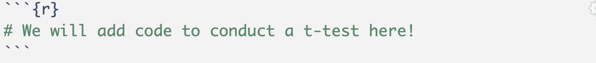

---
title: "Lab 1: Introduction to Quarto"
author: "Dr. C"
format: html
embed-resources: true
code-tools: true
editor: source (or visual)
---Lab 1: Introduction to Quarto
Setup
Make a Stat 331/531 and Lab 1 Folder
If you have completed Check-in 1.3, you have already completed steps 1 & 2.
If you have not already, create a folder on your computer called “Stat 331” or similar.
Create an RStudio Project inside of this folder.
Inside your Stat 331 folder, create another folder called either “week_1” or “labs”. Remember, we are trying to be organized and not work out of our Downloads folder!
Inside of this folder, create another folder called “lab_1” or similar.
Create your Lab 1 File
To create a Quarto document, you first need to ensure Quarto is installed on your computer. To do this, go here. You may have already installed Quarto during Check-in 1.3.
Once you have Quarto installed, open RStudio on your computer.
In RStudio, go to
File>New File>Quarto Document...and click onCreatein the dialog box without changing anything.Change the title of your document to be “Lab 1: Introduction to Quarto”
Add additional lines to your YAML header:
- add a line with
author:and your name. - add a line with
embed-resources: true. - add a line with
code-tools: true. - (optional) add a line to specify the
editoras your preference for either source or visual.
- Save the Quarto file as “lab1” in your “week_1” or “labs” folder. You can change up the name of your document, but the name cannot have spaces and it should describe what the document is.
Lab Instructions
Changing the Execution Options
Execution options specify how the R code in your Quarto document should be displayed. This guide provides descriptions on the options you can specify in a document’s execution.
To start, your YAML should look something like this:
Similar to how you added an author, embed-resources, (and editor) line, you will first need to add an execute line to your YAML.
Use the guide to specify execution options so that:
- your source code is always output on the page.
- your document will render even if there are errors.
Running the Provided Code
Next, click on the “Play” button on the right of the first auto-populated code chunk. Alternatively, you can highlight (or simply put your cursor on the line of) the code you want to run and hit ctrl + Enter or ⌘ + Enter.
You should see the code appear in the console, as well as the result of the code (2). Keep in mind the [1] before the 2 is vector notation. This means the result is a vector of length 1, whose first element is 2.
Let’s spice this code up a bit. Delete 1 + 1 from the code chunk and write the following code:
# Load a dataset into the R Environment.
data(ToothGrowth)
# Look at the summary of the variables in the dataset.
summary(ToothGrowth)Now run this code. You should see a six-number summary of the variables len and dose included in the ToothGrowth dataset, as well as the frequency of the levels contained in the supp variable. Further, if you inspect the Environment tab, the ToothGrowth dataset should appear. You can click on the dataset name (not the blue play button!) to look at the data.
Check the Data Documentation
In your console (not in the Quarto document), type ?ToothGrowth (or alternatively help(ToothGrowth).
Use the information that pops up in the Help pane in RStudio to fill in the blanks below. Add the questions and your responses after the R code chunk. Before the code chunk, create a section header (using #s) that describes the contents of the section (e.g., Tooth Growth Dataset).
This dataset investigates the effect of ______ ____ on tooth growth in _________ ________.
The two supplement delivery methods include OJ (_______ _______) and VC (_________ ______).
It is a data frame with ____ observations and ____ variables.
Your Tooth Growth Dataset section should look something like this:

Creating a Plot
Your second code chunk is just as boring as your first, so let’s spice it up! Replace the 2 * 2 code with the following (we will talk about graphics next week!):
# make sure to load the package ggplot2 (or alternatively tidyverse)
library(ggplot2)
ggplot(data = ToothGrowth,
aes(x = supp,
y = len)) +
geom_boxplot() +
labs()Now, run this code chunk! You should see side-by-side boxplots comparing tooth length between the two supplement delivery methods contained in the ToothGrowth data set.
Look back at the help documentation for the ToothGrowth dataset to determine what len represents (i.e., “Length of xxx”).
Next, look up the help file on the labs() ggplot2 function to find the arguments you can use to specify the \(x\)- and \(y\)-axis labels. Change the \(x\)-axis and \(y\)-axis labels to display reader-friendly axis labels as found in the ToothGrowth help file. For example, “Supplement Type” is better than “supp”.
Note that #| echo: false is an output option applied only to this specific code chunk. Remove this line so the code appears in your final rendered document.
Create another section header (like you did before) stating what is included in this section.
Inserting a New Code Chunk
Navigate to the last sentence of the Quarto document. We’re now going to insert a new R code chunk at the bottom of the document.
There are four different ways to do this:
type ctrl + alt + i on Windows, or ⌘ + ⌥ + i on macOS,
Click on the symbol. This should automatically default to R code, but if you have a Python compiler on your computer, you might need to select “R” from the options.
If you are using the Visual editor, click on the “Insert” button, then select “Code Chunk”, and finally select “R”.
Manually add the code chunk by typing
```{r}. Make sure to close your code chunk with```.

Conducting Statistical Analyses
Refresher on a two-sample independent t-test
While a second course in statistics is a pre-requisite for this class, you may want to go here for a refresher on conducting two-sample independent t-tests.
In this section, we are going to conduct a two-sample independent t-test to compare tooth length between the two supplement methods in the ToothGrowth dataset. I have outlined the null and alternative hypotheses we will be testing:
Carry out the following steps:
Look up the help documentation for
t.test(). Hint: look at the examples at the bottom for comparingextraacross groups in thesleepdataset.Using the function
t.test(), write code to carry out the analysis. You can assume unequal variances and a two-sided alternative.Run your code chunk to obtain the output for your statistical test.
Write a numbered list (in Markdown) below the code chunk containing:
- Your conclusion (in the context of these data) based on the p-value.
- An interpretation of the confidence interval (make sure to read what confidence level is used by default).
- Create another section header, describing the contents of this section.
Render your Document
Render your document as an html file. Use the “Render” button (the blue arrow!) at the top of your screen.
If you run into trouble rendering your document, try restarting R and running your code chunks in order, and see if you can find the problem.
Another common issue is deleting the tick marks (```) that surround your code chunks. If you notice that the code chunks are not showing a “Play” button, or that they are not highlighted in gray, double check your tick marks!
Recall we included error: true in our YAML execution options. This means that your document will still render even if there are errors. Make sure you are double checking your work!
You will notice that there is auto-generated text that is unrelated to the work that you completed. It is always a good idea to delete this extra text!
Styling your Quarto Document
You can find a list of every option you can use to format an HTML document here and here. Further, here are lists of different themes you can specify in your YAML to produce differently styled outputs.
Make the following changes to your document:
Specify “code-folding” in your YAML document options.
Specify in the code chunk options that your boxplots of tooth length by supplement delivery method should be center aligned.
Write and include a figure caption for the boxplots using a code-chunk option.
You might have fun playing around with other themes or options!
Render again!
Notice that when you render the document, all of the code reruns again, producing the same output as before, but with your changes – this is called reproducibility!
You should render often while completing your practice activities and lab assignments. Make small changes, then make sure the file still renders rather than making a bunch of big changes and then realizing something is wrong.
Turn it in!
Open the .html file on your computer to make sure it looks as you expected. Then upload the rendered (.html extension) document to Canvas!
Caution
Double check that you have embed-resources: true in your YAML. Without this, your html will not be formatted correctly on Canvas. You may want to look at what you turn in through your Canvas portal!
You’ll be doing this same process for all your future Lab Assignments. Each of these will involve a Quarto file. Some weeks, I may have a template for you to copy into the Quarto file just as with the first practice activity.